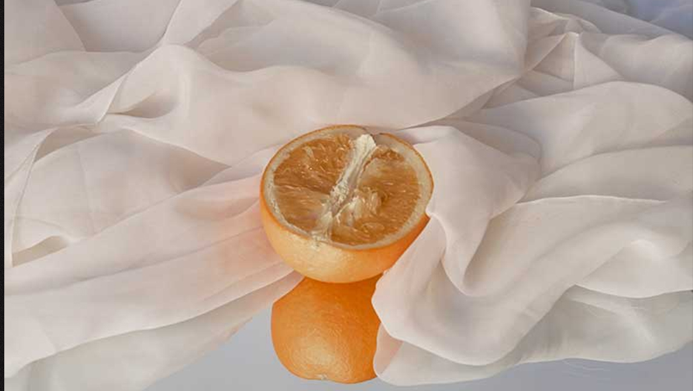

La historia de Orange Fiber comienza en Sicilia, un lugar en el que los hermosos naranjos son abundantes. Sin embargo, se dieron cuenta de que, por cada fruta exprimida en jugo, la mitad terminaba como un producto desechado. En lugar de aceptar esta realidad, encontraron la inspiración en la naturaleza y se propusieron crear un cambio. Con ingenio y creatividad, imaginaron cómo reutilizar estos desechos para fabricar una tela sustentable y sensorial, comprometida con la preservación del medio ambiente. Cada hebra de esta tela refleja los valores de la empresa y ha sido descubierta por diseñadores que buscan reinventar y concientizar el mundo de la moda y la alta costura, convirtiéndose en un icono de sustentabilidad.
La versatilidad del material ha logrado trascender estaciones y estilos, estableciéndose como la tela del futuro. Los productos elaborados con esta tela sustentable, obtenida a partir de jugo de cítricos, destacan por su alta calidad, refinamiento y sensorialidad. Incluso marcas reconocidas como Salvatore Ferragamo y H&M han optado por utilizar estas telas en sus creaciones, reconociendo su compromiso con la sostenibilidad.
Gracias a un proceso de producción único, esta empresa ha logrado destacar en la industria de la moda y el textil. Trabajan en colaboración con diversas industrias para llevar prácticas sustentables al mundo de la moda, contribuyendo a establecer un nuevo concepto de lujo basado en la ética y la preservación del medio ambiente.
Lo que comenzó como una modesta startup en 2014 ha evolucionado hasta convertirse en una reconocida industria líder en la producción textil sostenible e innovadora. Esta empresa ha sido pionera al utilizar jugos cítricos para crear textiles, un logro que ha sido reconocido con numerosos premios.
Orange Fiber ha logrado convertir la inspiración en acción, transformando los desechos en una realidad sustentable y hermosa. Su historia es un testimonio de que la sustentabilidad y el cuidado del medio ambiente pueden ir de la mano, impulsando un cambio positivo en la moda hacia un futuro más consciente.